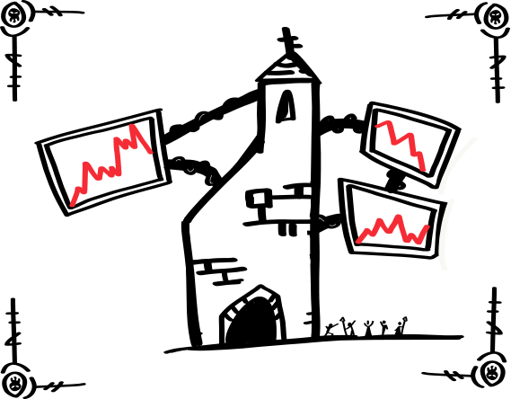

# [](/passage-one)  <p align="middle">A Choose Your Path Game by <a href="https://www.gabrielcornish.com">Gabriel Cornish</a></p> **THE BELL RINGS!** Enter a world where spells, curses, and potions are traded at blinding speeds. Stocks rise and fall. Power shifts hands in the blink of an eye. Economies of kingdoms crumble and thrive. **Experience a day in the cut-throat world of high stakes Wizard Trading!** ## [Passage One]("LET THE TRADING BEGIN!") <div class="grid-container"> <div class="text"></div> <div class="image"> Outside of the castle Magic Traders yell and shove each other as they watch the monitors over head. Each screen tracks every potion and curse as it's traded across dimensions and time.<br><br> She's watching you. The Dark Witch sits at the top of the castle overseeing everything. She expects a good return from you today. <strong>Word of advice: Do not disappoint the Dark Witch...</strong><br><br> <a href="/passage-two">Let's start trading!</a> </div> </div> ## [Passage Two](" ") First thing's first: You cast the spell Silence of Externals on yourself. This quiets the shouting around you so you can better focus on the Wizard Market Monitors. All your stock is in Mana Inc. at the moment. You expect Mana's stock to rise, but it's hard to predict when exactly. You notice Health Potions are on the decline in value. With less evil in the universe buying Health Potions might be risky, but you're also not going to get a better price. What do you do? - [Hold onto Mana stocks](/hold) - [Trade Mana stocks for bonds in the Health Potions Sector](/trade) - [Cash out. Dump the Mana stocks](dump) ## [Hold](" ") Test ## [Trade](" ") Test ## [Dump](" ") Test